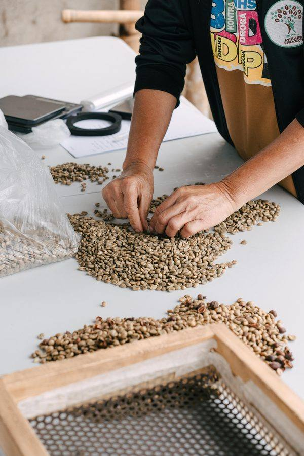

Education & Consulting
Growing Together, One Farm at a Time.
Knowledge freely shared is a harvest that multiplies. At Finca de Garces, we believe great coffee can change lives — and that belief compels us to walk alongside every farmer who is ready to grow.
why we teach
Because Lifting One Farm Lifts Them All
Our farm was not built in isolation. From the very beginning, the Garces family has understood that the quality of Philippine specialty coffee is shaped by the cumulative knowledge, practices, and care of every farmer in these highlands. When one grower improves their post-harvest method, their harvest quality rises. When a whole community understands cherry ripeness and sorting, the region's reputation rises with it.
That is the spirit behind everything we teach. We do not come as experts looking down at students. We come as fellow farmers who have made mistakes, learned slowly, and been grateful for every piece of wisdom shared with us along the way. We teach because we were taught. We share because sharing is how this work endures.
This is not a formal academy. It is something closer to a long walk through the trees, asking questions together, watching the cherries, and figuring out what the land is telling us.
Farmer Education
Specialty-Grade Practices, Shared Openly
Transitioning a farm to specialty-grade is not one decision — it is hundreds of small ones, made day by day, cherry by cherry. We teach those decisions. The kinds of things that are learned slowly through seasons of trial, error, and quiet observation of what works.
“Great coffee can change lives — and teaching how to grow it is one of the most purposeful things we do.”

Mutual Respect, Shared Learning
Honoring the Wisdom of the Mountains
The mountains above Pangantucan have been tended for generations by indigenous communities whose relationship with the land runs deeper than any modern agricultural training can fully reach. We approach these communities not as teachers, but as students.
“We grow together — not by bringing knowledge down from above, but by meeting in the middle, on the land we share.”
Partnership, Not Prescription
We build relationships with indigenous communities on the basis of genuine respect and reciprocity. No knowledge is extracted or repackaged as our own. What is shared between us stays in the circle of those relationships.
Learning from the Land’s Keepers
The highland communities of Mt. Kalatungan hold generational knowledge about the ecosystem, the seasons, the plants, and the rhythms of the mountain. This knowledge has shaped how we think about our own farm and how we treat the land we steward.
Opportunity Where It Belongs
Where there are pathways to improve livelihoods through specialty coffee, we look for ways to open those pathways to indigenous farming families — with their own terms, at their own pace, and in a way that honors their way of life.
Rooted in Shared Stewardship
Our belief in stewardship of the land extends into how we engage with every community that calls this mountain home. The forest, the water, and the soil do not belong to any single farm — they are a shared inheritance worth protecting together.
For Farmers & Cooperatives
Consulting That Walks the Field With You
Our consulting is not a course delivered from a classroom. It is a practical, honest engagement built on field visits, conversations, and the kind of patience that real improvement requires. If you are ready to grow toward specialty-grade, we are ready to grow with you.
Who We Work With
Individual Farmers
Smallholder farmers in Bukidnon and the surrounding highlands who want to improve the quality of their harvest, understand specialty-grade standards, and build a farming practice they are proud of.
Farming Cooperatives
Cooperatives and farmer groups seeking to collectively elevate the quality and value of their coffee. We work at the group level — helping establish shared standards, post-harvest protocols, and quality culture that benefits every member.
Farms Transitioning to Specialty-Grade
Farms that are currently producing commercial-grade coffee and are ready to begin the patient, deliberate process of transitioning toward specialty. We know this journey well — we walked it ourselves.
What We Help With
Every engagement begins with listening — understanding your farm, your challenges, your goals. From there, we build a practical path together. Our consulting may include:
- Farm assessment and quality gap analysis
- On-farm cherry selection and harvesting guidance
- Post-harvest processing setup and protocol development
- Drying, milling, and storage best practices
- Soil health and sustainable farming practices
- Cup quality evaluation and feedback
- Market positioning and buyer relationship guidance
- Documentation and lot tracking systems
“We grow together — that is not just something we say. It is how we work.”
Consulting engagements are tailored to each situation. Whether it is a single visit, a season-long accompaniment, or an ongoing relationship with a cooperative, we will discuss what makes sense together. Reach out to start the conversation.
Inquire About Consultinglet’s grow together
This is not just coffee, this is something meaningful.
Whether you are a fellow farmer, a cooperative, or a community beginning to think about specialty-grade coffee — our door is open. Bring your questions, your challenges, and your hope for what your farm can become.